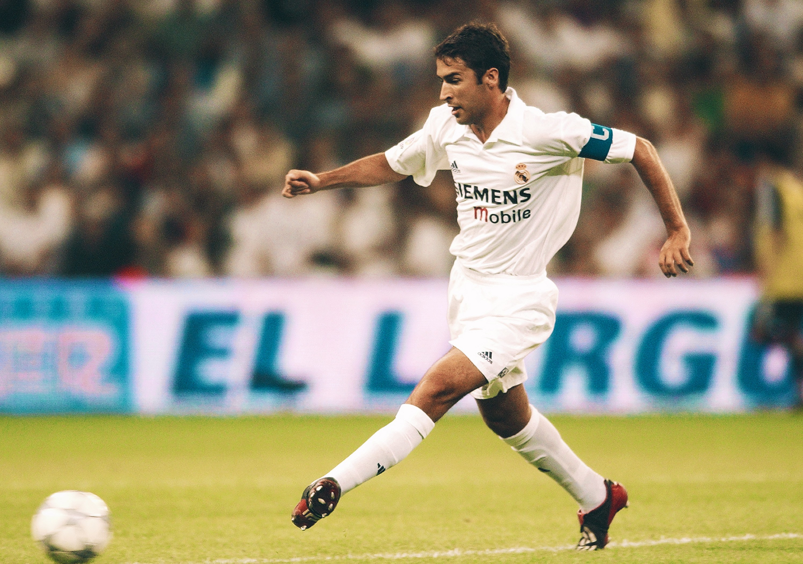
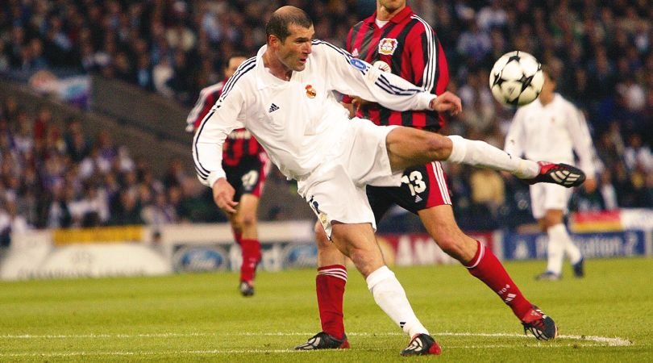
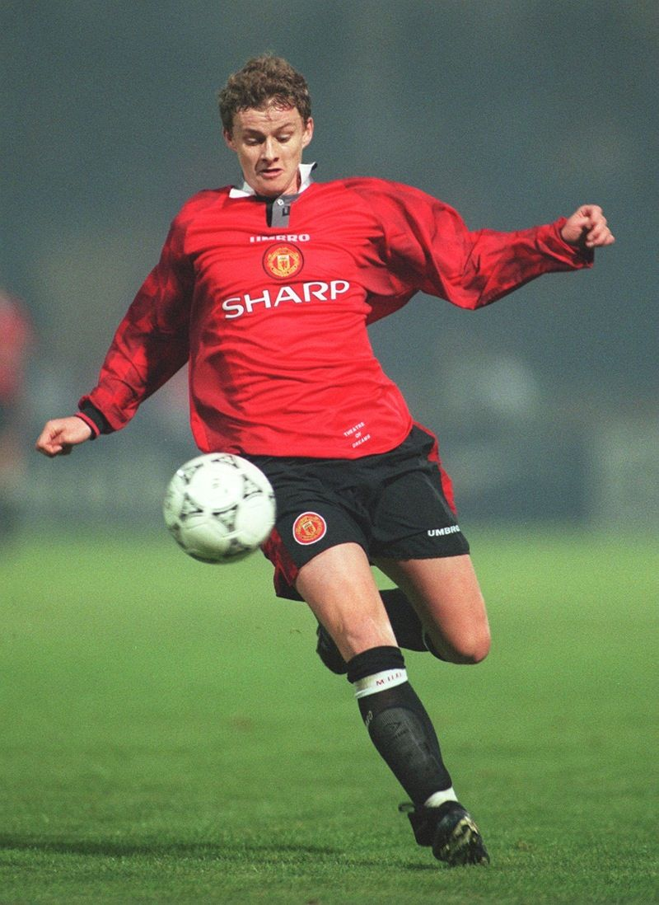
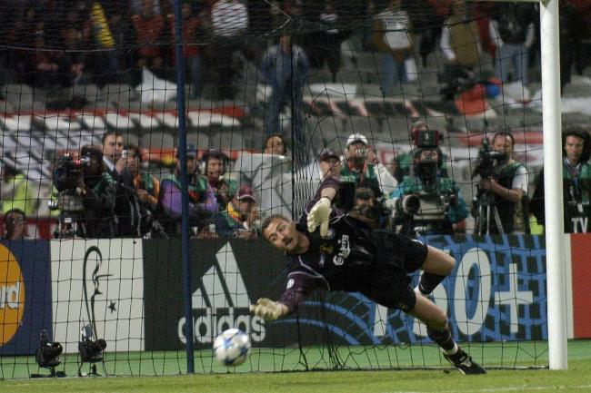
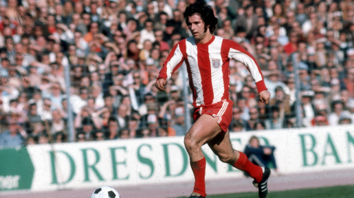
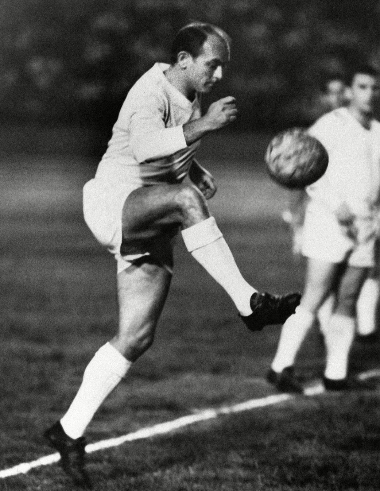
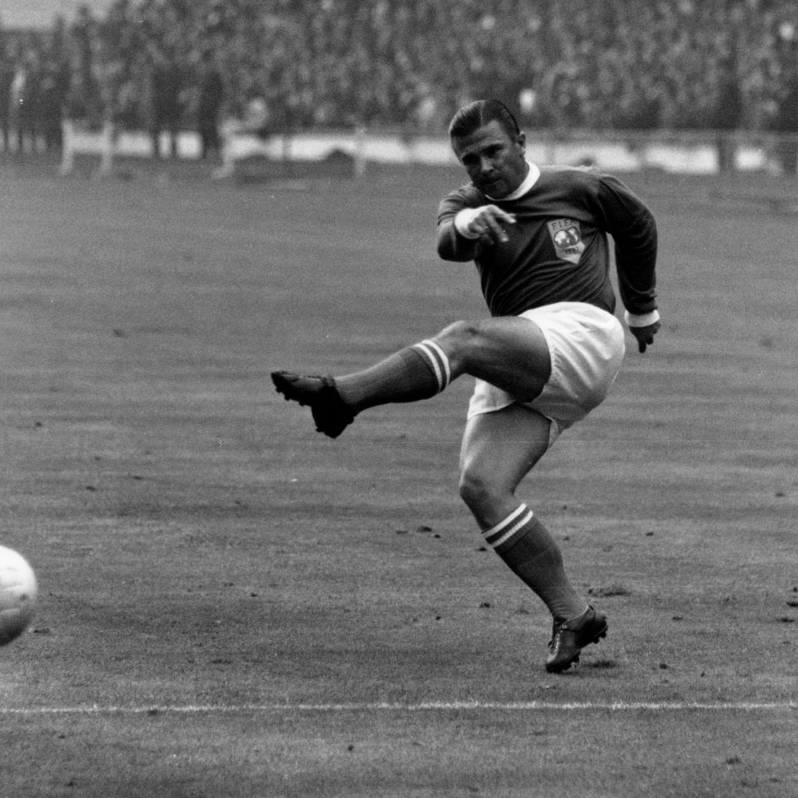

Lionel Messi
 Lionel Messi will undoubtedly establish himself as one of the greatest legends to have ever graced the game.
Messi is the "leader" of one of the greatest squads ever assembled, the current Barcelona squad, a team that has already written their name into potential folklore by being one of the most successful and entertaining teams to watch of modern football.
Furthermore, they have provided stiff competition and have become the de-facto team to beat.
In only sixty-two games, Messi has scored 62 goals, and he has won the top scorer awards three times.
He also holds the distinction of being tied for first place for the record number of Champions League goals in a single season with 12 (tied with Ruud van Nistelrooy).
Lionel Messi will undoubtedly establish himself as one of the greatest legends to have ever graced the game.
Messi is the "leader" of one of the greatest squads ever assembled, the current Barcelona squad, a team that has already written their name into potential folklore by being one of the most successful and entertaining teams to watch of modern football.
Furthermore, they have provided stiff competition and have become the de-facto team to beat.
In only sixty-two games, Messi has scored 62 goals, and he has won the top scorer awards three times.
He also holds the distinction of being tied for first place for the record number of Champions League goals in a single season with 12 (tied with Ruud van Nistelrooy).
Clarence Seedorf

Win the Champions League once and you have already established yourself as an elite footballer. Win it four times and you will be heralded as a legend. You will seal yourself a fine little chapter in the annals of history. Accomplish this feat with three different teams: you become Clarence Seedorf.
Raul

Raul holds the distinction of having never received a red card during his professional career. He’s still going strong for Schalke and has gathered a huge fanbase due to his utterly professional and humble nature. A three time winner of the Champions League with Real Madrid, the club's leading scorer and with more than 100 appearances in the Champions League, Raul is forever etched into the hearts of Madristas. During his hey-day, Raul terrorized defenses with his marauding runs and phenomenal goals. To this day, he remains the top goal scorer in the competition with 71 goals.
Zinedine Zidane

The footballing prowess of one Zinedine Zidane need not be described to anyone who watches football. However, if you had to pick one memorable moment from his illustrious career, besides the head-butt on Marco Materazzi, perhaps the top-most moment would be his volley that guided Real Madrid to Champions League glory against Bayer Leverkusen. From 18 yards out, Zidane watched, waited and adjusted his body accordingly before driving in the winning goal past Hans-Jorg Butt in one smooth movement.
Ole Gunnar Solksjaer

Ole Gunnar Solksjaer’s goal to seal victory for Manchester United epitomizes to what extent of drama and excitement champions league, nay football, can really provide. Celebrations had already begun in Munich, and legend has it that the name of Bayern Munich had been already engrained in the cup to be handed out to the winner of the 1999 Champions League Final. However, deep into extra time Teddy Shreingham equalized. Ole Gunnar followed that up with another goal late into injury time, and the rest, as they say, is history.
Jerzy Dudek

The “Miracle of Istanbul” is perhaps one of the greatest comebacks ever witnessed in modern football. After being 3-0 down at half time, Liverpool were led by Steven Gerrard to a famous victory over AC Milan in the 2005 Champions League Final. However, a lion's share of the credit goes to Jerzy Dudek, who having witnessed three goals shipped past him, was determined to keep all Milan efforts out. His remarkable double save against Andriy Shevchenko was perhaps the highlight of the evening, and as the game went to penalties he ensured that there was going to be only one winner.
Gerd Muller

Gerd Müller is virtually synonymous with that of a perfect striker. One of the greatest strikers to have ever lived, Müller scored 365 goals in 427 Bundesliga games and 68 times in 62 internationals, milestones no other player is ever likely to equal. In the Champions League, Müller rallied up 62 goals in 71 games for Bayern Munich, and helping guide Bayern Munich to three consecutive Champions League title, a feat that remains unbroken till this day. Even Der Kaiser, Franz Beckenbauer himself, quickly underlined, "Everything that FC Bayern has become is due to Gerd Müller and his goals." Müller also won the top scorer award on four occasions, the only player to have done so.
Alfred Di Stefano

Widely regarded as one of the finest players of the game, Alfred Di Stefano was also the man behind the instrumental domination of Real Madrid during the 1950s. Saeta rubia, the nickname for Di Stefano, was a versatile attacking player, a forward who had natural goal scoring prowess coupled with tremendous tactical versatility and vision. During Di Stefano’s tenure, the club won the European Champions’ Cup, now called the UEFA Champions League, for five seasons in a row, starting in 1956. He was also the top scorer in the 1957-58 season and the 1961-62 season. Furthermore, he is one of the only three players to score a hat-trick in a final, one contested between Real Madrid and Eintracht Frankfurt.
Ferenc Puskas

Alfred Di Stefano was not the only outstanding man in the 1960 European Cup final; Ferenc Puskas actually did one better than him by scoring four goals. Arguably the greatest player Hungary has ever produced, Puskas had not even played professionally for two years when Real Madrid signed him; he was age 31, an age considered by many to be past the prime of any professional football striker. No doubt, the superstars at Madrid were stunned. During eight seasons with Real, Puskás played 180 La Liga games and scored 156 goals. He scored 20 or more goals in each of his first six seasons in the Spanish league, and won the Pichichi four times: in 1960, 1961, 1963, and 1964, scoring 26, 27, 26 and 20 goals, respectively. In the Champions League, the Hungairan maestro won the top scorer award a grand total of three times. Puskas also remains the only person to score a hat-trick in two finals, and also holds the distinction of being the only player to score a hat-trick and being on the losing side, when Benfica defeated Real Madrid to win the European Cup for the second successive season. Nothing short of legendary.